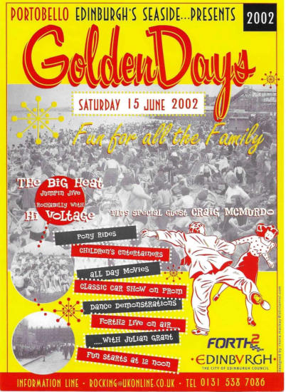
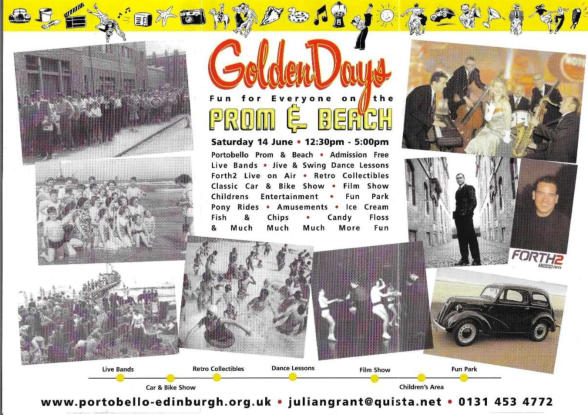
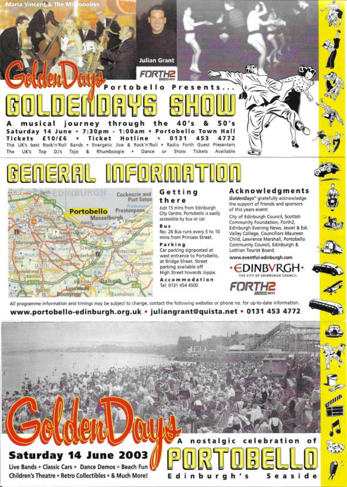
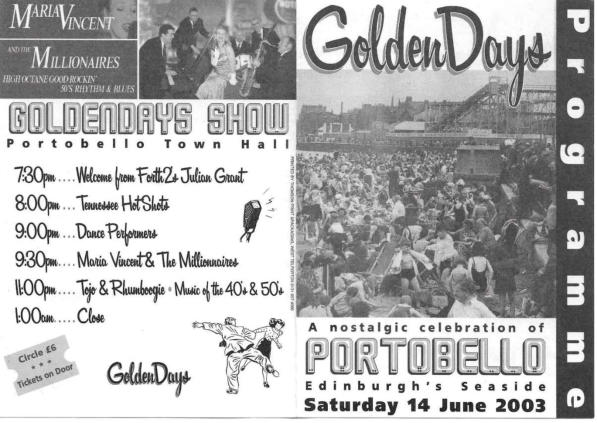
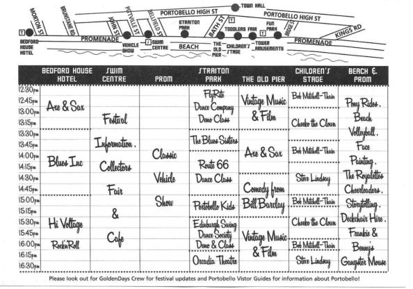
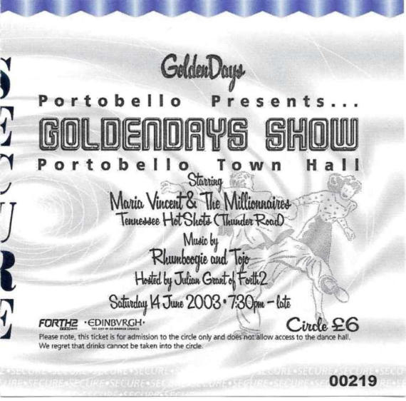

Golden Days
This nostalgic celebration of long, hot, summer days with crowds on the Portobello beach had a pilot event in 2002 as can be seen in the flyer below:

One of the main organisers was Gordon Mackay. According to the Autumn 2002 edition of The Portobello Reporter: “The aim of this festival on June 15 was to promote Portobello – Edinburgh’s Seaside. Based on the theme of music, dance and culture of the 1930s to the 60s, it was funded by the City of Edinburgh Council, Radio Forth and Jewel & Esk Valley College, and organised by a team of enthusiasts including some local people. Events started on the Promenade at 12.30pm with performances in the garden of Bedford House Hotel by the 30s swing group ‘Swing2002’, crooner Craig McMurdo, Hillbilly from England’s ‘Skiprats’, and a 60s set from local favourites ‘The Monuments’. The nearby line-up of over 20 classic cars was a great attraction, and an exhibition of 1953 fashion, memorabilia and photographs at the Swim Centre was well attended, with the old photographs attracting the most interest. Further along, children enjoyed pony rides. Demonstrations and lessons in Leroc, Swing and Lindy Hop at Straiton Place were especially popular with the younger generation, and deck-chairs on the beach were occupied by people enjoying this novelty and the music. At the Town Hall in the evening Julian Grant of Forth 2 presented the swing and jump jive outfit ‘The Big Heat’ and the Rockabilly band ‘Hi Voltage’. Demonstrations by Scotland’s top jive and swing dancers were introduced by Craig McMurdo with rock’n’roll devotees of all ages, suitably attired, joining in. This was a promising start to what is to be an annual event, with more activities on the promenade and more local involvement.” The event in 2003 did go ahead. The main sponsor was the Millennium Commission’s ‘You and Your Community’ Awards scheme. The City of Edinburgh Council sponsored the publicity material. The colourful flyer below was a result of this. Additional funding came from Edinburgh & Lothian Tourist Board. The theme of the event was based round the ‘Golden Era’ of family beach holidays from the 1930s to 60s.




There was a lot happening with ‘Fun for Everyone on the Prom & Beach’. Bill Barclay, a well-known comedian at the time, performed for an hour at ‘The Old Pier’. Radio Forth (Forth 2) had an outside broadcast on the prom featuring music from the 40s and 50s from 2 until 5.30pm. Later, they hosted The Golden Days Show A musical journey through the 40s and 50s in the Town Hall from 7.30pm until 1am. The UKs Best Rock‘n’Roll Bands’ performed, with tickets to either dance or watch the show available.

Local volunteer guides and drivers helped make this day a success. Their reward was a free lunch in the Swim Centre cafeteria and a pair of complimentary tickets for the evening show. Portobello Community Council and local councillors lent their support to the event. There is no information regarding a repeat of this in 2004, however the popularity of the promenade and beach has never really waned, even if the type of events being held has changed. All images are Copyright of Portobello Heritage Trust ©